Private presentation preview. Saved result verified; Prior fresh-run receiver acceptance reused for unchanged inputs
Input snapshot: mcl_s0_to_v_presentation_inputs_r3_v1@2026-10-05T03:57:54.309662+00:00. Input version: PITTSBURGH_EAST_END_2020_TRACTS_R2; frozen configuration SHA-256 4af671215d6d43668298ef1ef66ff45348a3f8b3cc91c84dac0b00547598466b.
Scope and model instance
Pittsburgh's demand boundary is a 19.77 km² East End rectangle around Oakland, Shadyside and Squirrel Hill. In WGS84 it spans −79.985 to −79.925 longitude and 40.425 to 40.460 latitude. A routing halo extends to −79.990/−79.920 and 40.420/40.465. CMU is a map landmark, not the population denominator or the extent of a campus travel survey.
The model generates resident-household HBW travel for a synthetic weekday 08:00–09:00 hour. It is a static, single-pass engineering case. It neither estimates all traffic on East End roads nor covers every purpose, freight movement or university journey. The earlier 4.35 km² CMU/Oakland preflight is a separate source product; the larger boundary was selected before assignment.
Inputs and preparation
Selection uses the internal points of 1,130 official 2020 Census blocks. Grouping those selected blocks by their 2020 tract IDs creates 41 zones. These are selected-block aggregates, not totals for 41 complete administrative tracts. The selected blocks contain 71,684 people and 32,432 occupied housing units; the latter serves as the scenario's household proxy.
The same block set has 91,801 workplace jobs in 2023 Pennsylvania LODES WAC C000. Workplace jobs determine attraction weights, not trip counts. Census 2020, LODES 2023 and the OSM 2026 extract have different vintages, so the scenario cannot reconstruct one observed morning. Eight bounded OSM tiles preserve original way and node identity; crossing map lines alone do not create road connections.
Separate LODES home-work relationships inform two scalar demand assumptions. Of 22,603 Pennsylvania-resident relationships originating in selected blocks, 6,505 also end inside the rectangle, giving an internal-capture proxy of 28.779%. Within those internal relationships, 9.608% have both ends in one model tract. Neither share is a measured hourly travel rate, and the zonal OD relationship counts are not copied into the gravity matrix.
Retained physical road graph

Description, units and scope
17,534 retained physical directed traversals in the saved 08:00–09:00 HBW model, shown in EPSG:26917. This is the retained model graph, not a claim to draw every road in the source archive. Virtual movements are excluded; colour has no traffic meaning. © OpenStreetMap contributors / ODbL. Reciprocal directed arcs can share geometry; no assigned flow is encoded. This drawing uses the frozen run_001 evidence. Later supplementary datasets are separate and are not implied to have entered this scenario.
PNG · SVG · PDF · Source record
Population and household inputs
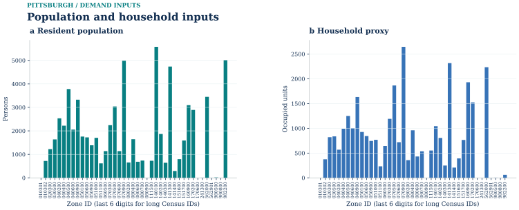
Description, units and scope
Selected 2020 blocks grouped by tract ID; not whole-tract totals. All 41 zones are retained; population total 71,684. Occupied units total 32,432. Missing household fields are unknown, not zero. Census/ACS allocation is an input, not a simulated traffic quantity. This drawing uses the frozen run_001 evidence. Later supplementary datasets are separate and are not implied to have entered this scenario.
PNG · SVG · PDF · Source record
Transit source geography

Description, units and scope
Earlier bounded preflight stop tags; no timetable. 109 saved stop records. Stop tags and road proximity do not prove legal walk access or operating service. The frozen scenario has no accepted service-day transit paths; no zero-demand transit bar is implied. The gray retained road graph is geographic context, not a transit route model. Source stops and route shapes do not establish legal pedestrian access, operating service, or observed ridership. This drawing uses the frozen run_001 evidence. Later supplementary datasets are separate and are not implied to have entered this scenario.
PNG · SVG · PDF · Source record
01 / Trip generation
A transferred HBW rate of 1.90 person trips per occupied unit per day is combined with an assumed 25% share for the morning hour. Applied to 32,432 occupied units, this gives 15,405.2 scenario person trips. The rate is linked to the accepted Boston regional-demand reference; Pittsburgh observations did not estimate it.
The scalar capture and intrazonal proxies leave 10,971.681175065 external or uncaptured persons, 425.972216078 intrazonal persons and 4,007.546608857 internal interzonal persons. Attractions are normalized from local workplace-job weights to this last total. The updated generation graphic shows all 41 selected-block tract-ID zones by production and attraction, alongside the full demand ledger. An employment-rich area can attract many modeled trips without treating every regional worker as a resident-generated trip.
Trip generation and demand accounting
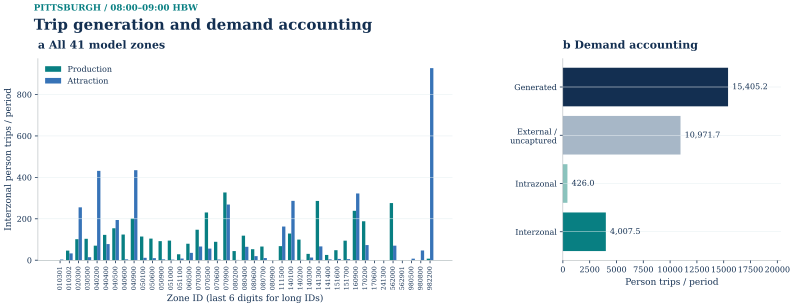
Description, units and scope
All 41 zones; 08:00–09:00 HBW. The left panel shows saved interzonal productions/attractions. The right panel accounts for all generated persons, including excluded and intrazonal components. No top-12 truncation. Scenario assumptions, not measured trip counts. External and intrazonal components do not enter interzonal assignment; attractions are normalized to productions. This drawing uses the frozen run_001 evidence. Later supplementary datasets are separate and are not implied to have entered this scenario.
PNG · SVG · PDF · Source record
02 / Trip distribution
Free-flow drive impedance on the declared turn-expanded graph enters exp(−0.08 × minutes). The 0.08 min⁻¹ coefficient is transferred from the Boston method and is not locally fitted. IPF reaches a maximum margin residual of 1.616832407×10⁻⁶ persons in four iterations.
The frozen morning direction is 100% forward and 0% reverse. This convention conserves the 4,007.546608857 PA total in directed OD; it does not claim that reverse commuting is absent in reality. Of 1,640 potential ordered interzonal pairs, 1,406 have positive demand once zero margins are accounted for. Every positive drive pair has a route on the declared graph.
The updated heatmap uses the complete input order of all 41 model zones. Zones tract2020_42003080900 and tract2020_42003241300 have no positive OD entries, so their zero rows and columns are explicitly retained. The earlier positive-only index contained 39 IDs. Zero margins are model results, not missing data. The log(1 + persons) scale is a presentation transform only.
Trip distribution and directed OD margins
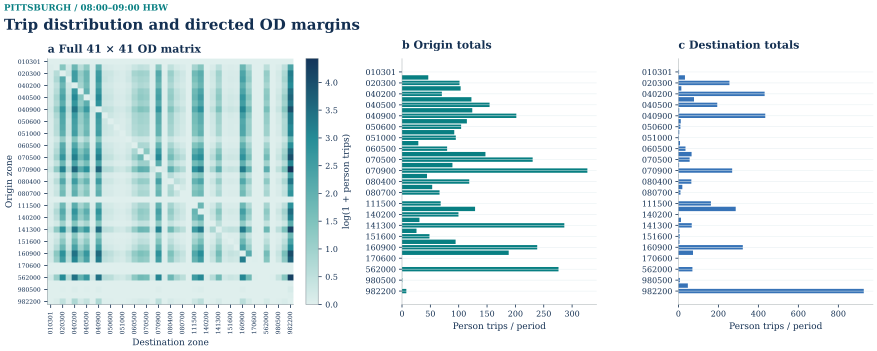
Description, units and scope
Full 41×41 model-zone matrix including zero cells; 1406 positive OD pairs and 4,007.546608857 persons in 08:00–09:00 HBW. Colours are log(1+persons); margins are untransformed directed OD totals after PA direction. Every model zone is retained. Zero rows and columns remain visible; intrazonal cells are structural zeros. Labels use the final six digits of long zone IDs. This drawing uses the frozen run_001 evidence. Later supplementary datasets are separate and are not implied to have entered this scenario.
PNG · SVG · PDF · Source record
03 / Mode choice
Driving follows the same declared road topology; walking follows eligible OSM links where a route exists. Walking assumes 4.8 km/h and one minute of access. Driving adds four access minutes, USD 2 parking and USD 0.20 per routed kilometre. With USD 20/hour value of time, zero alternative constants and utility slope −0.07 per generalized minute, costs vary by OD rather than applying one fixed modal split.
Walking is unavailable on 114 of the 1,640 possible interzonal pairs, including 105 positive-demand pairs. Driving covers every positive OD, so all internal interzonal persons have an available alternative. The result is approximately 3,138.9 drive persons (78.3%) and 868.6 walk persons (21.7%). Occupancy 1.2 converts driving once to 2,615.767323562 vehicles, with PCE factor one. Pedestrian capacity is not modeled.
Transit is Not modelled. The existence of Pittsburgh Regional Transit is not in doubt; the bounded case lacks the accepted timetable/path input needed for a cost-based alternative. OSM stop and route references cannot substitute for that input. The two-mode result is therefore incomplete for broader transport-policy interpretation even though its implemented choice calculation passes verification.
Mode choice: demand, cost and availability
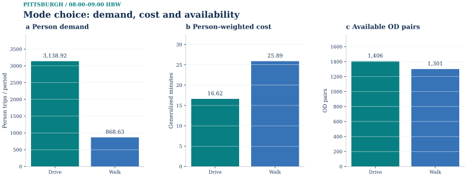
Description, units and scope
Saved OD-specific choice in 08:00–09:00 HBW; sums over every positive-demand OD. Persons, person-weighted generalized minutes, and available OD counts have separate axes. Transit is not modeled; no zero bar is shown. Generalized cost includes model time and money terms. Person totals precede the separate occupancy-to-PCE conversion. This drawing uses the frozen run_001 evidence. Later supplementary datasets are separate and are not implied to have entered this scenario.
PNG · SVG · PDF · Source record
04 / Physical-link assignment
The final network has 17,534 physical auto traversal arcs and 38,850 virtual movement arcs, totaling 56,384 arcs on 35,068 solver nodes. A physical road gets one BPR traversal regardless of how many upstream movements enter it. Road maps exclude the movement arcs, preventing fictitious duplication of road geometry.
Zone loading uses 41 distinct OUT-state physical-link-end points in the retained connected graph. The origin state's convention omits travel time and distance on the first physical link and charges subsequent traversals. This can matter for short OD pairs and must remain explicit. It cannot be changed to upstream loading, or subtracted a second time, during presentation.
OSM supplies speed tags for 6,999 physical links and usable lane totals for 7,280. Engineering speed proxies cover 10,535 links and lane/capacity proxies another 10,254. Capacities are expressed in PCE per modeled hour; BPR uses α=0.15 and β=4. The source records 140 bridge-tagged links, eighteen tunnel-tagged links and 188 with nonzero layer. Topology, not a line crossing, determines connectivity; a shared source node may still form a legitimate ramp junction across differing layer tags.
The restriction source contains 214 relations. The adapter handles 124 node-turn restrictions, applies five conservative final-exit closures for via-way cases and quarantines known ways associated with six malformed active relations. Sixty-three relations have no drivable movement in the filtered graph; eleven no_turn_on_red relations are phase-dependent rather than universal turn bans. Relevant weekday-AM conditions are considered. Recorded checks find 109 prohibited-pair exclusions and 23 only-turn exclusions, with none of those forbidden arcs surviving. Conservative handling can also remove permissible alternatives and does not replace checking current street signs.
All 1,406 positive vehicle OD pairs are loaded. The saved initial gap is 4.773992564434884×10⁻⁷; the earlier receiver's independent full-graph value is 4.773992537349287×10⁻⁷. Both are below the frozen 10⁻⁴ threshold, so there are zero FW updates. The objective is 12,081.066645895 PCE-min. Path projection reproduces physical-link flows, 4,971 physical links carry positive demand and maximum v/c is 0.924094112.
The updated FS_A01 places physical-flow and v/c maps side by side, using the same saved solution. Loading-detail charts use physical roads, and FS_A02 presents the actual initial gap with its threshold. Static soft-capacity BPR allows ratios above one in principle; the low result here is conditional on the internal-demand-only scenario, not measured congestion.
Frank–Wolfe: physical flow and distribution

Description, units and scope
Saved Pittsburgh static Frank–Wolfe endpoint for 08:00–09:00 HBW. The map and 22-bin histogram use the same complete 17,534-link physical-flow vector, including 12,563 exact-zero links; 4,971 links exceed 1e-6 PCE. Flow is PCE accumulated during the declared one-hour period, not persons or flow per simulation time step. The map uses a square-root sequential color scale with original-unit ticks and gray road context; histogram counts are linear and no links are omitted. Turn, access and other nonphysical solver arcs are excluded. Only the saved iteration-0 initialization exists; FW performed zero subsequent updates. Reciprocal directed arcs may overlap geometrically; flows are not summed. This full saved static case is distinct from the separate S72 and T4 method-transfer instances. This is a modeled engineering scenario, not observed traffic. © OpenStreetMap contributors / ODbL 1.0. R11 layout repair: map and all-link histogram share measured top and bottom panel bounds. The original saved physical-link IDs, exact flow vector, geographic vertices, display offsets, histogram edges and counts remain unchanged.
PNG · SVG · PDF · Source record
Saved initial checks and original endpoint views
Frank–Wolfe: physical-road loading
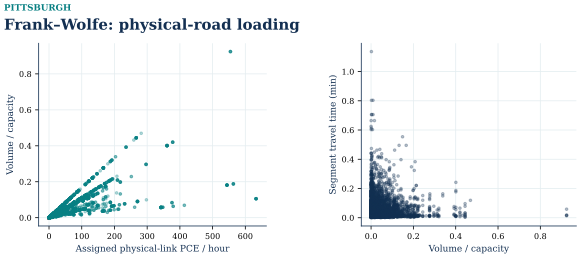
Description, units and scope
All used physical links are shown, excluding virtual turn arcs. Points retain the saved PCE, v/c and BPR segment travel time. The OUT-state convention omits the first physical link when loading a path; the figure does not alter that endpoint convention. Single-pass engineering scenario; no local empirical calibration. 4,971 used physical links · maximum v/c = 0.924094
PNG · SVG · PDF · Source record
Saved results and assignment checks
R3 saved-result replay passed for Pittsburgh. The fresh-solve and independent full-graph acceptance comes from earlier receiver evidence for these unchanged identities, which R3 reuses explicitly. The receiver did not substitute a previous preflight, Boston or Hong Kong result.
Checks cover generation units and boundaries, IPF margins and zero structure, PA direction, OD availability and probability, person-to-PCE conversion, physical/virtual path reconstruction, BPR objective, node conservation and shortest-path gap. Earlier fresh and saved outputs differ only within reported floating-point tolerance. Six corrupted copies were rejected, including rehashed OD or probability changes, unknown zone/link references and deletion of a new result despite a historical result being present.
Saved initial checks and original endpoint views
Frank–Wolfe: the saved initial check
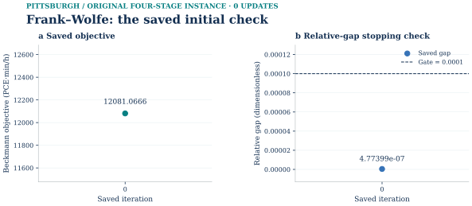
Only the actual saved iteration 0 is shown: objective 12081.0666458954 PCE·min/h and relative gap 4.77399256443488e-07, against the unchanged 0.0001 stopping gate. There were zero updates. Each panel contains a single numerical point; no missing trajectory or second state is inferred. The companion physical-flow map reads this method’s own saved vector. This frozen original demand instance is not relabelled as a later selected-demand or transit-revision run.
SVG · PNG · PDF · Source data
Static assignment: demand margins and physical endpoints
Static assignment demand margins

Complete evidence · same figure · SVG · PNG · PDF · Plot data · Source record · Caption
Physical demand endpoints

Complete evidence · same figure · SVG · PNG · PDF · Plot data · Source record · Caption
Time-expanded network and path examples
Time-expanded network in layers
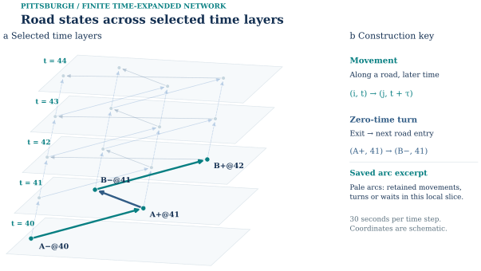
Complete evidence · same figure · SVG · PNG · PDF · Plot data · Source record · Caption
Local construction details
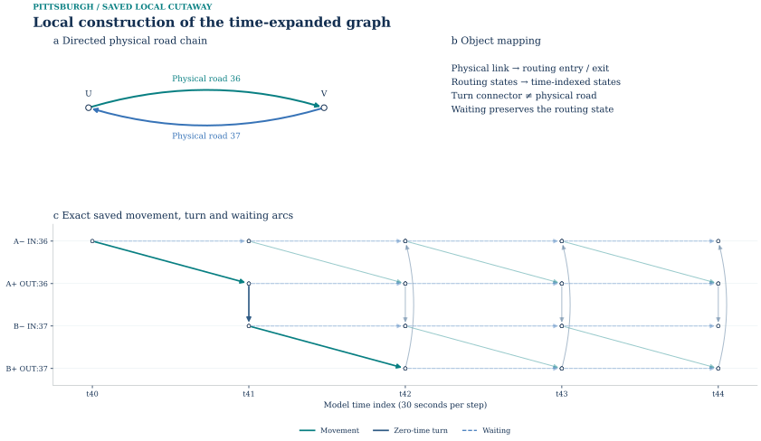
Complete evidence · same figure · SVG · PNG · PDF · Plot data · Source record · Caption
Optimization on the time-expanded network
Phase I: artificial-flow clearance
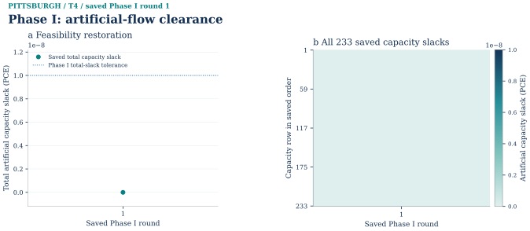
Complete evidence · same figure · SVG · PNG · PDF · Plot data · Source record · Caption
Phase II objective
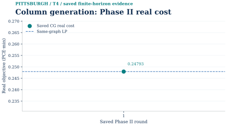
Complete evidence · same figure · SVG · PNG · PDF · Plot data · Source record
Independent pricing closure
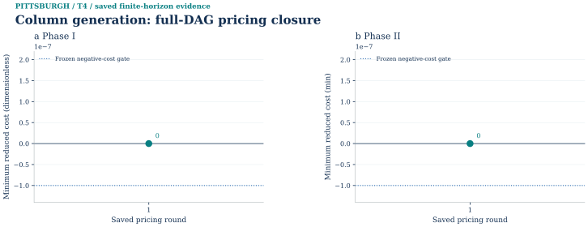
Complete evidence · same figure · SVG · PNG · PDF · Plot data · Source record
Lagrangian bounds and certified gap
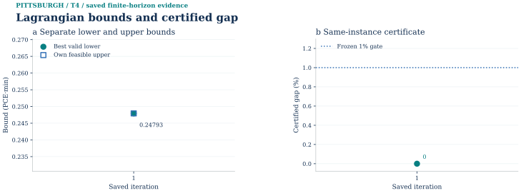
Complete evidence · same figure · SVG · PNG · PDF · Plot data · Source record
Capacity prices at the best dual bound
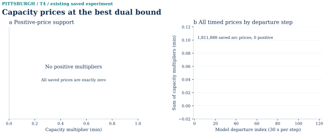
Complete evidence · same figure · SVG · PNG · PDF · Plot data · Source record · Caption
Path-pool growth and primal recovery
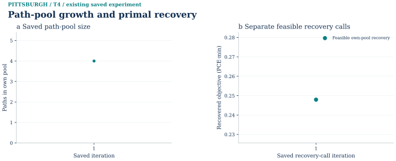
Complete evidence · same figure · SVG · PNG · PDF · Plot data · Source record · Caption
Reproduction and input identity
Current S0 reception and the released algorithm figures are integrated in the current method record. Public reception summary · Source and scope notice. Private solver inputs, checkpoints and complete compute archives are outside this figure release.
The public reproducibility archive is not yet available.
Runtime versions above are recorded producer facts. The V presentation task does not replace or upgrade the frozen numerical environment.
Model limits and observations
The model has no demand-congestion feedback cycle or dynamic loading. External entering commuters, freight, commercial traffic, deliveries and non-HBW purposes are outside the assigned matrix. LODES separately reports 82,644 Pennsylvania-resident job relationships entering the rectangle and 2,652 from outside Pennsylvania; neither statistic supplies an hourly inbound trip estimate. Their presence in reference data must not be advertised as assigned incoming traffic.
Missing local counts, behavioral calibration, transit paths and independent traffic observations constrain interpretation. Speed and capacity proxies affect more than half the physical links, and conservative via-way closures can distort alternatives. A map of accepted model flow is therefore unsuitable as a claim about total observed road traffic.
The declared OUT-state loading and selected-block aggregation remain visible. The updated OD matrix displays all 41 zones, including the two zones without positive OD entries. Archived scope, receipts, command records and full tables preserve those conventions. Source acknowledgments cover Census, LEHD LODES and © OpenStreetMap contributors under ODbL; only the separately allowed derived content enters the preview.
The smaller preflight included source, grade-separation, GPS and image investigations, but they are not newly validated observations of the four-stage demand. This presentation carries forward their boundary as context while excluding raw trajectories and unlisted photographs. No campus population survey or current route observation was created by the static calculation.